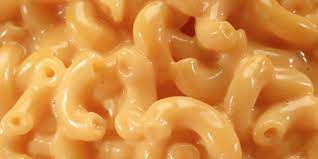

Mac & Cheese

Description
Its CORN with CHEESE. Its amazing.
The cheese mixed with the corn with a bit of salt and pepper is wonderfully delicious.
Its simple to make and is more that the sum of its parts should be.
Ingredients
- 1 can of corn kernals
- 500 grams of chedder cheese
- 500 grams of mozzarella cheese
- a shake of pepper
- a shake of salt
Steps
- Saute the corn in a pan on medium heat
- Add salt and pepper and mix well
- Shred both the cheeses
- Add in the cheese to the pan and mix well
- Stir and mix well until cheese is melting and stringy
- Serve hot with some more mozzarella on top
Back to home